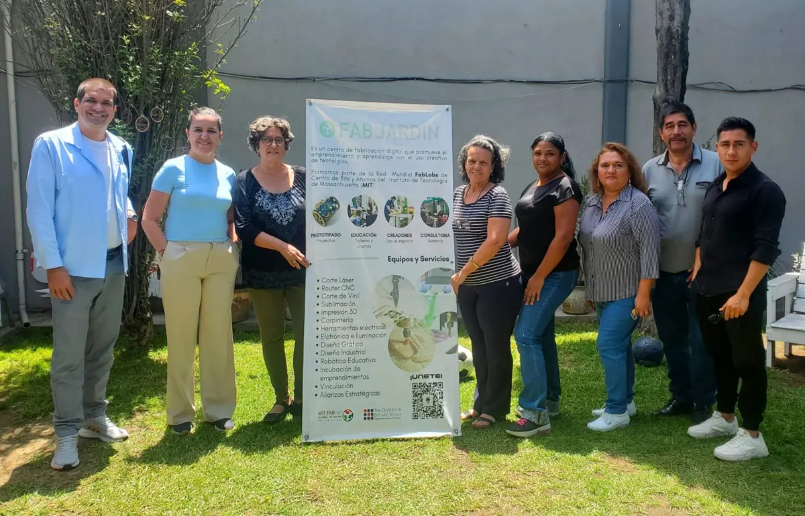
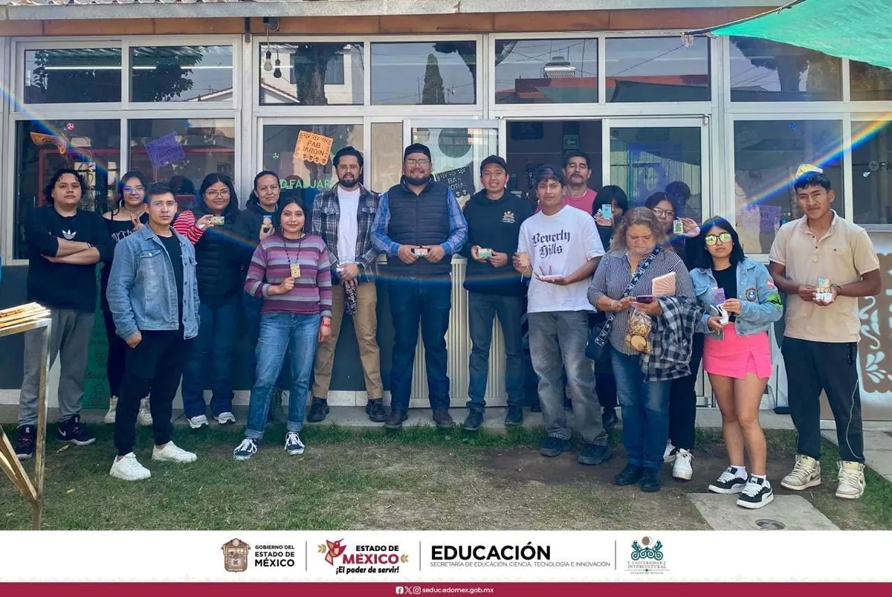
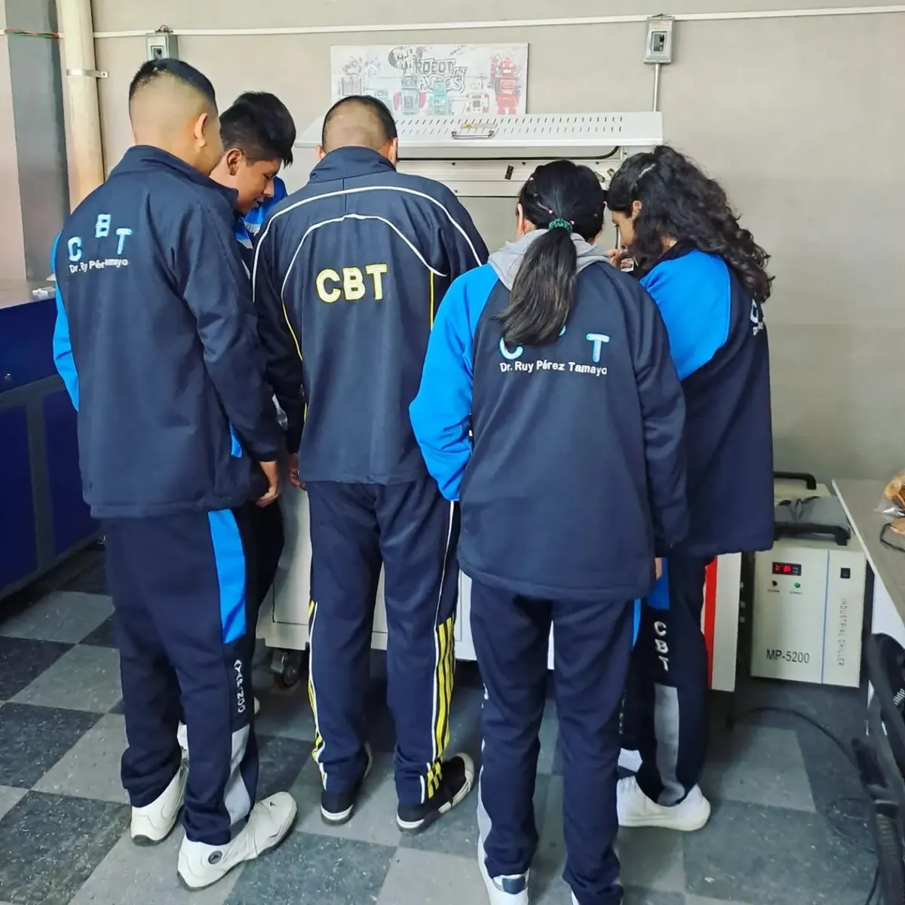
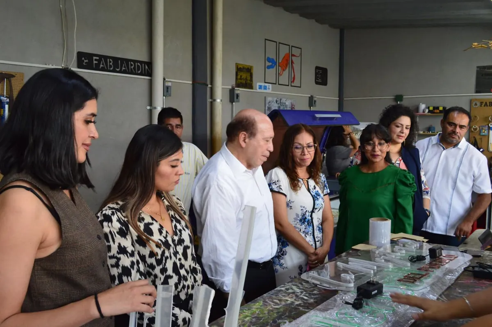
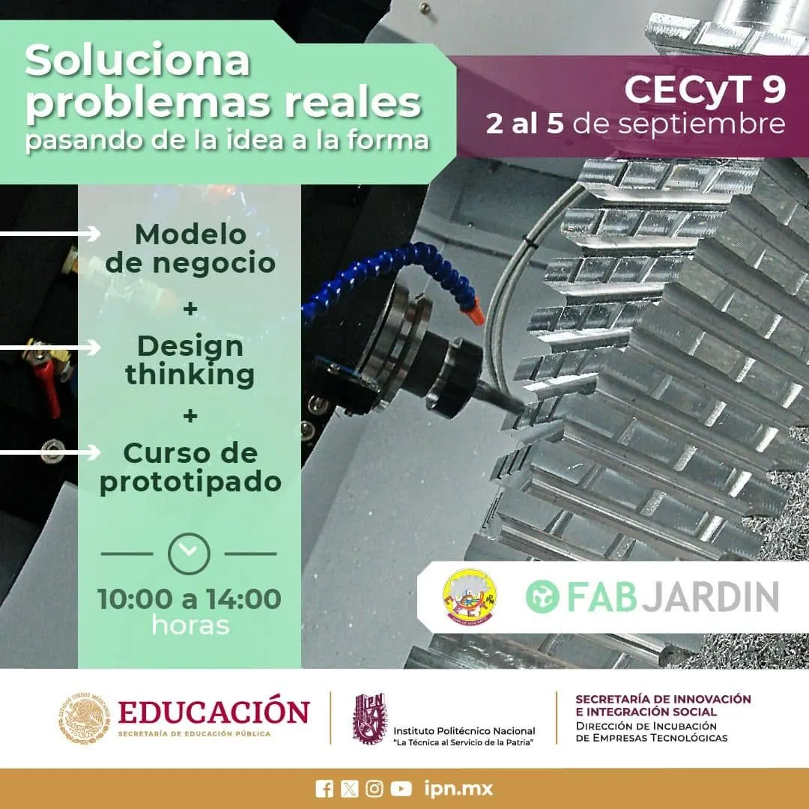
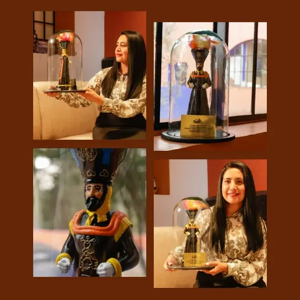

01
Visita del PNUD Cuba
Visita a nuestras instalaciones e intercambio de experiencias sobre espacios de innovación con el Programa de las Naciones Unidas para el Desarrollo (PNUD) de Cuba.
Eventos, proyectos y personas que se encuentran en Fabjardin para aprender, fabricar y colaborar.
Talleres, jornadas abiertas y encuentros con la comunidad. Pronto publicaremos aquí el calendario.
Más de 2,200 proyectos finalizados, desde maquetas y prototipos hasta productos de emprendedores. Conoce lo que hemos hecho en nuestro informe de actividades.

Visita a nuestras instalaciones e intercambio de experiencias sobre espacios de innovación con el Programa de las Naciones Unidas para el Desarrollo (PNUD) de Cuba.

Visita de la Universidad Intercultural del Estado de México para crear proyectos orientados al manejo y aprovechamiento de residuos, impulsando su reinserción en circuitos económicos mediante la creatividad y la tecnología.

Talleres sobre tecnologías creativas para diferentes Colegios de Bachillerato Tecnológico de la Región Volcanes, como complemento a su formación en carreras orientadas al diseño y la tecnología, mediante prácticas de observación y ejecución.

Visita, recorrido y experiencia con la Dirección General del CECYTEM, el Colegio de Estudios Científicos y Tecnológicos del Estado de México.

Jornadas de formación en los Centros de Estudios Científicos y Tecnológicos (CECyT) del Instituto Politécnico Nacional, en colaboración con la Secretaría de Innovación e Integración Social.

Desarrollo del premio para las comparsas de chinelos en Juchitepec, de la Secretaría de Cultura y Turismo del Estado de México.
Colabora, aprende o fabrica con nosotros.